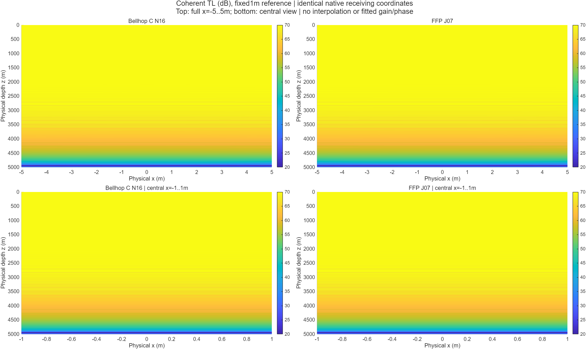
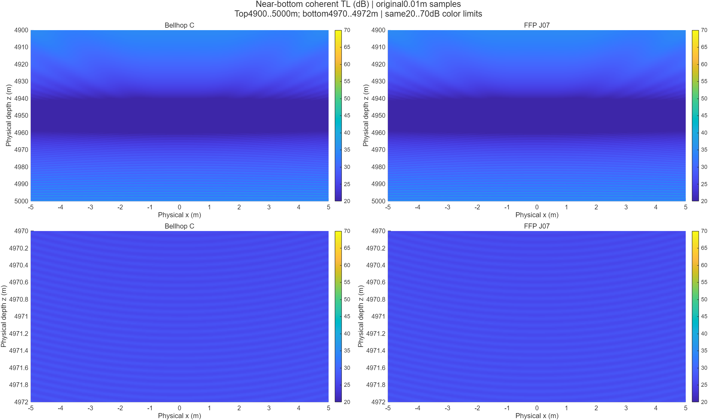
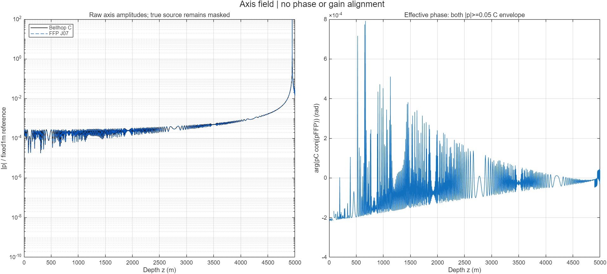
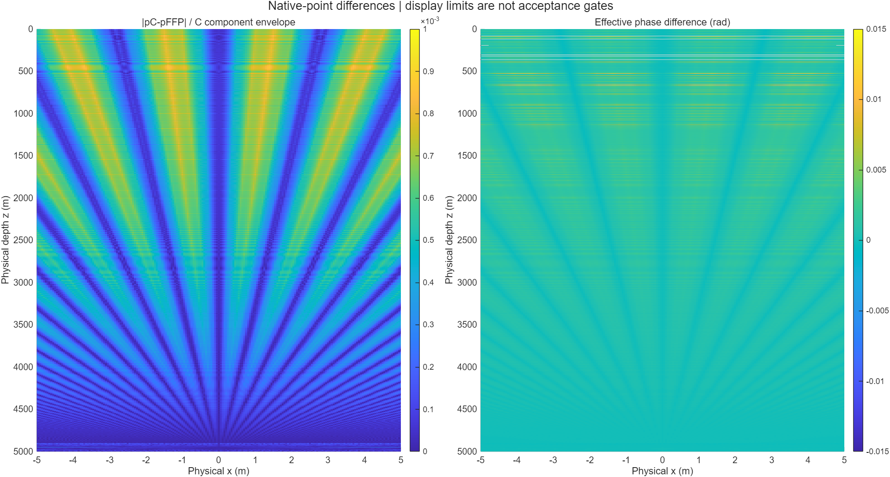
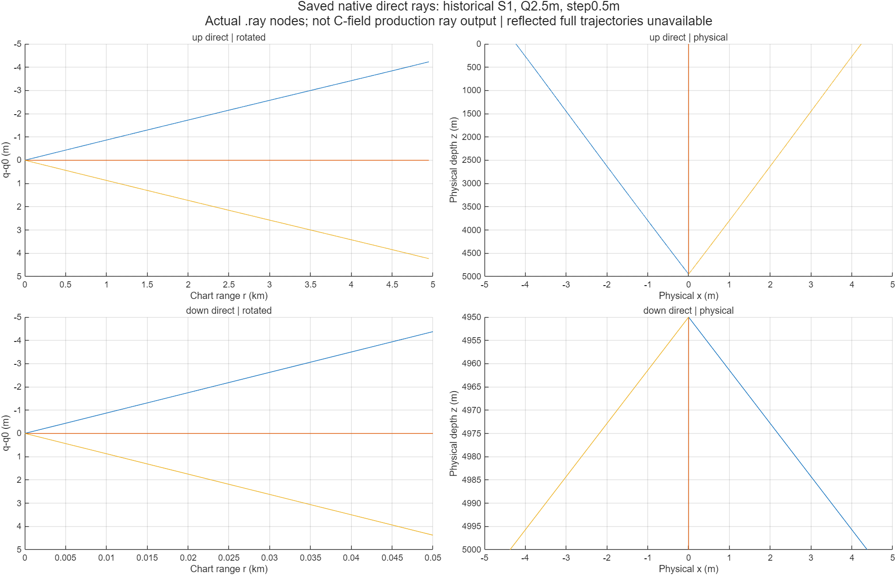
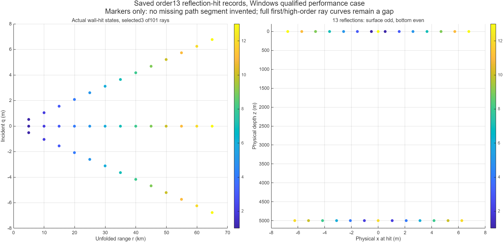

5000m水深、源4950m、10kHz、全向3D点源与同一流体底假设。10981×201点完全相同；C=-conj(native)，FFP=4πGreen；没有增益/相位拟合、插值或平滑。TL固定20–70dB，超界值仍保存在原MAT。
本轮不重算A/B/C或FFP。新R模式在RAM启动门停止、PID0，未重试；下面完整声线仅为既有S1直达记录，高阶图只显示真实反射命中点，不能当成完整反射轨迹。






原始共点差CSV及报告保存在本实验comparison目录。C/FFP方法差异、弱场支持和中央亮带结论以中文报告为准；D与新FFP未执行。本页无需联网。